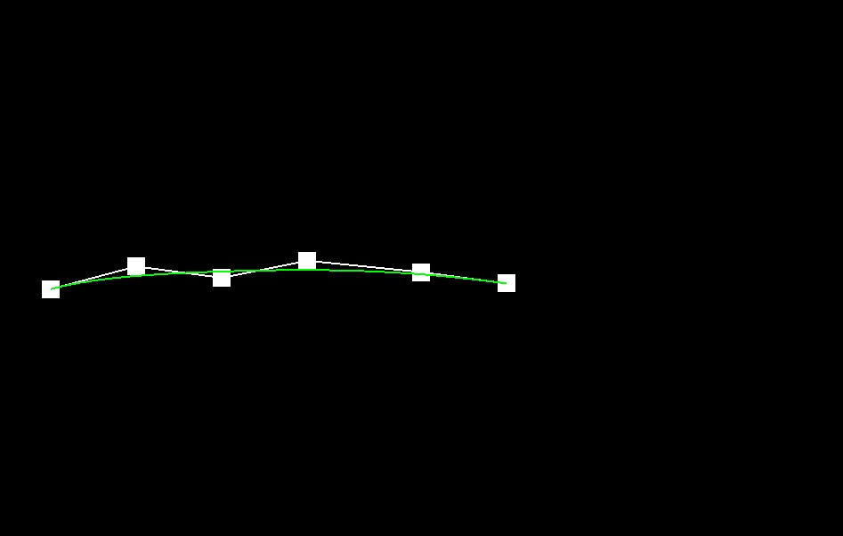
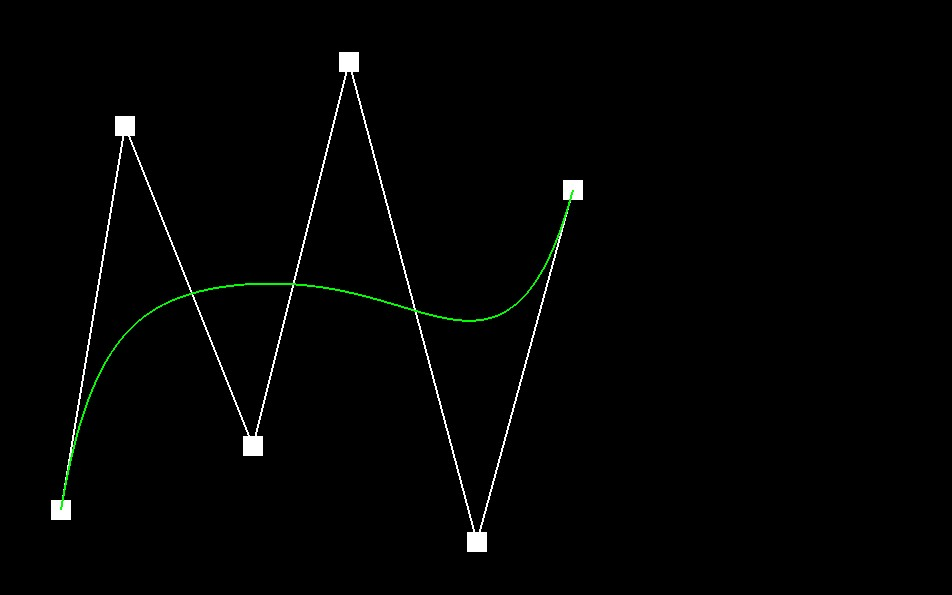
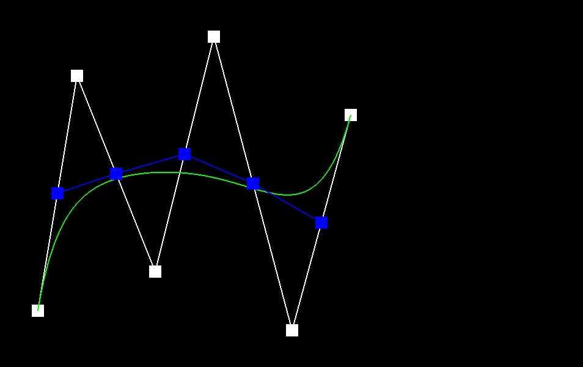
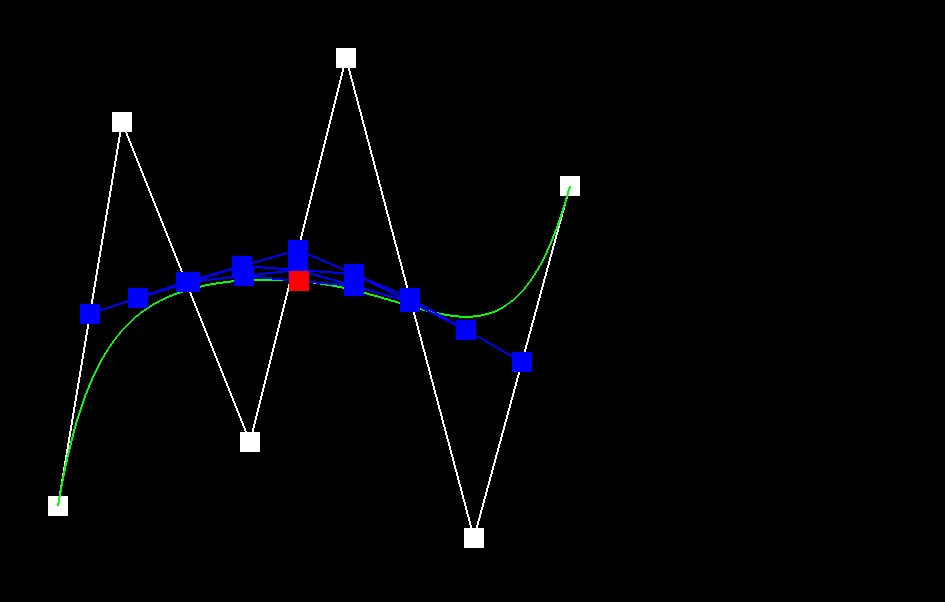
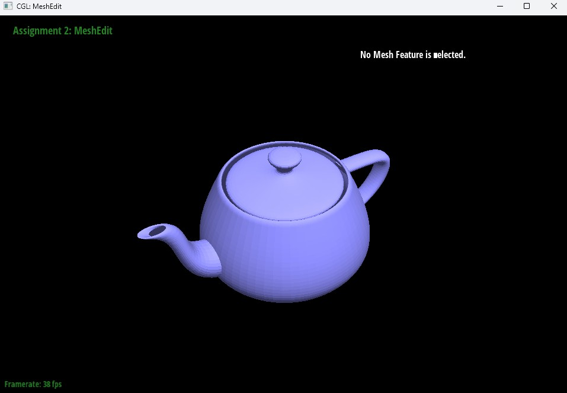
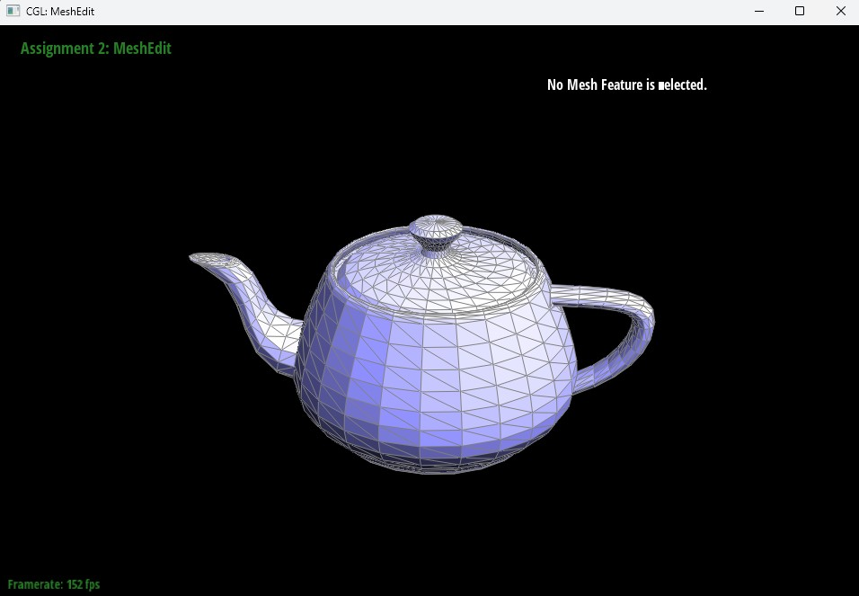

In this project we implement bézier curve evaluation by applying de Casteljau’s algorithm, also known aside
iterated linear interpolation, to evaluate the intermediate levels in our interface. We apply de Casteljau's algorithm
in 1D, and then across the second parameter as surface evaluation. Our vertex normals are then computed in an
area-weighted average of adjacent face normals that result in smooth shading. Halfedge mesh edits edge flip and Edge
split support interactivity during editing. Loop subdivision upsampling allows us to refine the meshes while updating
our vertex and edge positions with loop rules. Many geometric operations allow reduction in repetitious local rules
like lerps for Bézier, local halfedge connectivity updates, and local stencils for subdivision.
Build / Run Notes
We worked on Windows in Visual Studio using the CMake Open Folder workflow in x64-Debug. Dependencies were provided through vcpkg and the CMake toolchain file was configured as
C:\vcpkg\scripts\buildsystems\vcpkg.cmake. We built using Build → Build All.
We ran meshedit.exe by passing a single input file as a command line argument through launch.vs.json. The file extension determines which part of the assignment runs.
We used .bzc files for Part 1, .bez files for Part 2, and .dae files for Parts 3 through 6.
Visual Studio runs the program from the build output directory out/build/x64-Debug, so relative paths for assets generally need ../../../ to reach the repository root.
# Visual Studio CMake run arguments
# launch.vs.json
"args": ["../../../bzc/mycurve6.bzc"]
# Input formats used in this assignment
# .bzc Bezier curves
# .bez Bezier surfaces
# .dae Triangle meshes

Figure 1. Sanity check run showing a Bézier curve rendered from a 6 control point .bzc file.
Part 1: Bezier Curves with 1D de Casteljau Subdivision
de Casteljau’s algorithm and our implementation
In our function, de Casteljau’s algorithm evaluates a Bézier curve using repeated linear interpolation between adjacent control points.
Given fixed points \(P_0,\dots,P_n\) and parameter \(t\in[0,1]\), one subdivision step produces \(n\) new points
\(\{Q_0,\dots,Q_{n-1}\}\), where each point is computed by
\[
Q_i = (1-t)P_i + tP_{i+1}, \qquad i = 0,\dots,n-1.
\]
Repeating this step reduces the point count by one each time until a single point remains, which is the evaluated point on the curve at \(t\).
Our function BezierCurve::evaluateStep performs exactly one level of this computation and returns the next set of intermediate points.
Each \(Q_i\) lies on the straight segment between \(P_i\) and \(P_{i+1}\), which is why the intermediate levels converge toward the final evaluated point.
We implement one step of the algorithm inside BezierCurve::evaluateStep(...), to return the next row of intermediate points.
By allocating the nextLevel vector, we compute each entry with one lerp.
For each index \(i\), this allows us to compute
\[
\text{nextLevel}[i] = (1-t)\cdot \text{points}[i] + t\cdot \text{points}[i+1].
\]
Our output length is \(\text{points.size()} - 1\), a result of interpolating the adjacent pairs.
We also have the parameter \(t\), which is a class member used by our interface. Mouse wheel scrolling changes \(t\), which then triggers subsequent calls to evaluateStep,
recomputing the intermediate levels with the newly detected value. When we call evaluateStep, the next level or row of the de Casteljau triangle is evaluated.
Our custom 6 control point curve and all evaluation levels
We created our own custom .bzc file with 6 fixed control points, defining a degree-5 Bézier curve.
In the viewer the control points are given by white points connected by the control polygon, and our Bézier curve is the smooth line in green when we toggle C.
We then iterate between levels to show each step of de Casteljau's triangle.
The number of points decreases by 1 each level, confirming that evaluateStep returns the properly sized nextLevel vector.
For visual correctness we rely on the fact that the intermediate points at each level lie on the segments formed by the previous level, and that the final red point
at level 5 lies on the green Bézier curve.
Figures 2–7 show each level from the original control polygon down to the final evaluated point.
We toggled the completed Bézier curve on using C while stepping levels using E.

Figure 2. Level 0 showing the 6 original control points and the completed curve.

Figure 3. Level 1 showing 5 intermediate points after one evaluation step.

Figure 7. Level 5 showing the final evaluated point on the curve.
Figure 8. The same curve with a different parameter \(t\) selected by mouse scrolling.
Figure 9. A slightly different 6 control point curve with gentler amplitude.
A slightly different curve and changing \(t\) by scrolling
To satisfy the comparison requirement, we used a second 6 control point curve with noticeably different placement.
We also modified \(t\) for our original curve using mouse scrolling. Scrolling changes the evaluated point and intermediate levels while keeping the original control points fixed.
Our \(t\) specifically controls where we evaluate the curve between its endpoints, where \(t=0\) corresponds to the first control point \(P_0\) and \(t=1\)
corresponds to the last control point \(P_n\). When we modify \(t\), the interpolation weights \((1-t)\) and \(t\) are changed in every lerp step.
When we use the same fixed points, changing \(t\) causes the blue points that represent all of our levels to shift, and the final evaluated point moves along our green Bézier curve.
This is a result of evaluateStep recomputing nextLevel with the updated \(t\) each time, changing the output of the entire de Casteljau triangle.
Furthermore we show a slightly different curve by modifying the control point coordinates to produce a curve with a gentle amplitude in the Bézier geometry.
This specific case demonstrates that our output depends on the input control points, and a different set of control points produces a clearly visibly different curve,
as well as consistent evaluation processes in our mapping and stepping.
Part 2: Bezier Surfaces with Separable 1D de Casteljau
How de Casteljau Extends to Bézier Surfaces and Our Implementation
After creating the Bézier curve successfully, we extrapolate our strategy
to create 2D patches that form a surface of a 3D mesh.
A Bézier curve is evaluated using de Casteljau’s algorithm by repeatedly
interpolating between adjacent control points using a parameter
\( t \in [0,1] \). Given control points
\( P_0, P_1, \dots, P_{n-1} \), one level of interpolation produces
new points defined by
\[
P_i^{(1)}(t) = (1 - t) P_i + t P_{i+1},
\quad \text{for } i = 0, \dots, n-2.
\]
This process is repeated until a single point remains, yielding the
curve value \( B(t) \). A Bézier surface patch extends this idea to
two parameters and is defined by an \( n \times n \) grid of control
points \( P_{i,j} \). To evaluate the surface at parameter pair
\( (u,v) \), we apply de Casteljau’s algorithm in a separable manner.
First, we fix \( u \) and treat each row of control points
\( \{ P_{0,j}, P_{1,j}, \dots, P_{n-1,j} \} \) as a Bézier curve in the
\( u \)-direction. Applying the 1D algorithm to each row produces
intermediate points \( Q_j(u) \). These intermediate points form a
Bézier curve in the \( v \)-direction, and applying the 1D
de Casteljau algorithm again with parameter \( v \) produces the final
surface point \( S(u,v) \). A Bézier surface is therefore a tensor
product of Bézier curves and can be evaluated independently along each
parameter direction. In this assignment, each cubic Bézier patch uses
a \( 4 \times 4 \) control point grid, so each surface evaluation
performs multiple levels of linear interpolation in both parameter
directions. De Casteljau’s algorithm is numerically stable because it
relies entirely on repeated linear interpolation rather than explicit
evaluation of Bernstein polynomials. The resulting surface lies within
the convex hull of its control points.
Screenshot of bez/teapot.bez Evaluated by Our Implementation
The image below shows the teapot surface loaded from
bez/teapot.bez and evaluated by our Bézier patch implementation.
The function evaluateStep(points, t) performs one level of
de Casteljau interpolation by computing
\( (1 - t) P_i + t P_{i+1} \) for all adjacent control points.
Within evaluate1D(points, t), evaluateStep is repeatedly applied
until only one point remains, fully evaluating the Bézier curve at
parameter \( t \). The function evaluate(u, v) computes the Bézier
surface by first calling evaluate1D(row, u) for each row of control
points to produce intermediate points, then calling evaluate1D on
those intermediate points with parameter \( v \), and finally
returning the resulting three-dimensional position. The rendered
teapot confirms correct evaluation of cubic Bézier surface patches.
The smooth curvature of the body, spout, and handle indicates that
interpolation across each \( 4 \times 4 \) control grid is functioning
correctly, and the absence of discontinuities between patches
demonstrates consistent evaluation across patch boundaries.

Figure 10. bez/teapot.bez evaluated by our implementation.
Part 3: Area-Weighted Vertex Normals
How we implemented area-weighted vertex normals
In exploring area-weighted vertex normals, we implemented Vertex::normal() to compute
smooth or Phong vertex normals for a triangle mesh using the halfedge data structure.
For each vertex, we traverse the one-ring of adjacent faces and compute each triangle’s
area-weighted face normal using a cross product. We then sum the contributions and
normalize the result to return a unit vector.
We start from the vertex’s outgoing halfedge using HalfedgeCIter h0 = halfedge();.
We iterate around the one ring using an iterator step h = h→twin()→next().
We stop when we return to the starting halfedge, looping with h == h0 as our stopping
condition. This allows us to contact each face once without looping infinitely. We
skip boundary faces by checking h→face()→isBoundary(), since boundary loops are
represented as virtual faces and should not contribute to the shading normal.
In the halfedge mesh, each face stores halfedges whose next() pointers traverse the face
boundary in counterclockwise winding order with respect to the outward direction of the
face. Each halfedge is directed, with h→vertex() as the start vertex of the halfedge,
and h→next()→vertex() as the next vertex along the counterclockwise loop. The
consistent winding order matters because our cross products use the right-hand rule,
and this keeps our normals oriented in the proper direction. Swapping the order would
flip the normals and can produce incorrect shading that appears inverted or overly dark.
To compute these normals, we include area-weighted face normals that use triangle corners
p0, p1, and p2 in counterclockwise order. Our edge
vectors are computed using
e1 = p1 - p0 and
e2 = p2 - p0. We then compute the cross product
nf = e1 × e2. This is area weighted by the
magnitude,
∥e1 × e2∥ = 2A, which is directly proportional
to the triangle’s area. Vertex normals are computed by summing and normalizing,
Nv = normalize(∑ nf).
For each non-boundary face, we used the current halfedge h to read the triangle’s three
vertices directly from the data structure:
p0 = h→vertex()→position,
p1 = h→next()→vertex()→position, and
p2 = h→next()→next()→vertex()→position. Finally, the
accumulated area-weighted normal is computed as
N += cross(p1 - p0, p2 - p0);. After
summing, if we find the degenerate case we return (0, 0, 0) to avoid division by zero.
Otherwise, we return the unit-length vector N.unit() that results in correct lighting.
Teapot shading comparison with and without vertex normals
We loaded dae/teapot.dae and toggled vertex normals using Q. The implementation results
in a clear visual difference between flat shading using per-face normals and smooth
Phong shading using per-vertex normals. The difference is apparent in the lighting,
highlights, and shading across the teapot’s surface. The Phong shading displays visible
reduction in faceting and offers smoother highlight transitions, indicating that the
computed per-vertex normals are being applied as intended.

Figure 11. dae/teapot.dae with default flat shading.
Figure 12. dae/teapot.dae with vertex normals enabled.
Part 4: Edge Flip
How we implemented edge flip and how we kept pointers consistent
Edge flip replaces the shared diagonal of two adjacent triangles with the other diagonal, without creating or deleting any mesh elements.
Our implementation reassigns halfedge next, twin, vertex, edge, and face pointers so that the local connectivity matches the flipped configuration.
We did not flip boundary edges and we kept the operation constant time by only touching the local neighborhood of the selected edge.
Teapot before and after edge flips
We loaded dae/teapot.dae, selected edges, and pressed F to flip them. The screenshots below show the teapot before and after several flips.
Figure 13. Teapot before edge flips.
Figure 14. Teapot after edge flips.
Debugging notes
We validated edge flips by flipping multiple edges repeatedly and checking that the mesh remained manifold and hole-free.
We also checked that the selected edge and surrounding triangles updated as expected after each operation.
Part 5: Edge Split
How we implemented edge split and how we kept pointers consistent
Edge split inserts a new vertex at the midpoint of the selected edge and retriangulates the two adjacent faces into four triangles.
Our implementation creates only the necessary new elements and updates all halfedge connectivity pointers in the affected neighborhood.
We ignored boundary edge splits unless implementing the boundary extension.
Mesh before and after edge splits
The screenshots below show a mesh region before and after performing several edge splits using S.
Figure 15. Mesh before edge splits.
Figure 16. Mesh after edge splits.
Before and after a combination of edge splits and edge flips
We also tested that split edges can be flipped and that flipped edges can be split by alternating operations in multiple nearby and far apart regions of the mesh.
Figure 17. Mesh before combining splits and flips.
Figure 18. Mesh after combining splits and flips.
Debugging notes
We validated edge splits by checking that the new vertex is placed at the original edge midpoint and that the local triangulation matches the expected four-triangle configuration.
We confirmed the mesh stayed connected and that repeated operations did not create holes.
Part 6: Loop Subdivision for Mesh Upsampling
How we implemented loop subdivision
We implemented loop subdivision by computing new positions for old vertices and for the vertices inserted on old edges, then updating the mesh connectivity by splitting edges and flipping new edges that connect an old vertex to a new vertex.
We stored temporary values in Vertex::newPosition and Edge::newPosition, used isNew flags to track old versus new elements, and then copied the computed newPosition values into the final Vertex::position fields after connectivity was updated.
Observations and screenshots after loop subdivision
We observed that repeated subdivision smooths the mesh and softens sharp corners and edges.
We documented how sharp features become rounded and we tested whether pre-splitting edges can reduce the amount of feature shrinkage.
Figure 19. Loop subdivision iteration 0.
Figure 20. Loop subdivision iteration 1.
Figure 21. Loop subdivision iteration 2.
Cube asymmetry experiment and preprocessing
We loaded dae/cube.dae and applied multiple iterations of loop subdivision, observing that the cube can become slightly asymmetric under repeated subdivision.
We documented the asymmetry and then pre-processed the cube using edge flips and edge splits to encourage symmetry under subdivision.
We explain why the asymmetry occurs and how the preprocessing makes the subdivided connectivity more symmetric.
Figure 22. dae/cube.dae after subdivision without preprocessing.
Figure 23. dae/cube.dae after preprocessing with flips and splits and then subdivision.
Extra Credit
If we implement extra credit extensions, we explain what we did and document how they work with screenshots here.